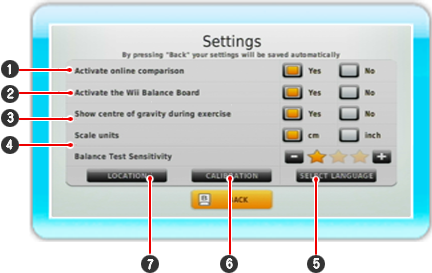

This is where you can activate the settings by pointing at the field using the Wii Remote and then pressing  . A setting is active when its field is filled with orange.
. A setting is active when its field is filled with orange.

| 1 |
Activate online comparison functions only if your Wii console has Nintendo Wi-Fi Connection activated.
|
| 2 |
Activate your Wii Balance Board here.
|
| 3 |
Decide whether you would like to see your centre of gravity during the exercise.
|
| 4 |
Select the right measurement units for your use.
|
| 5 |
This is where you can change the language for the software.
|
| 6 |
Use Calibrate to recalibrate your Wii Balance Board at any time.
|
| 7 |
Under Place you have up to three lines of free text, for example to enter your name or your location. The text will be displayed in the Main menu.
|